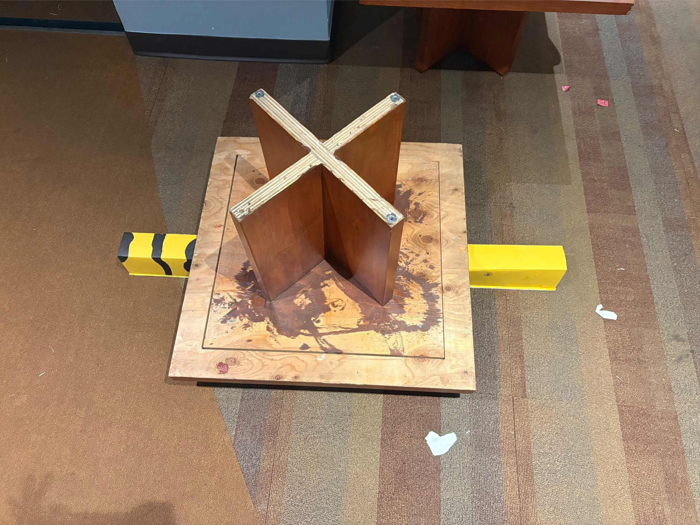
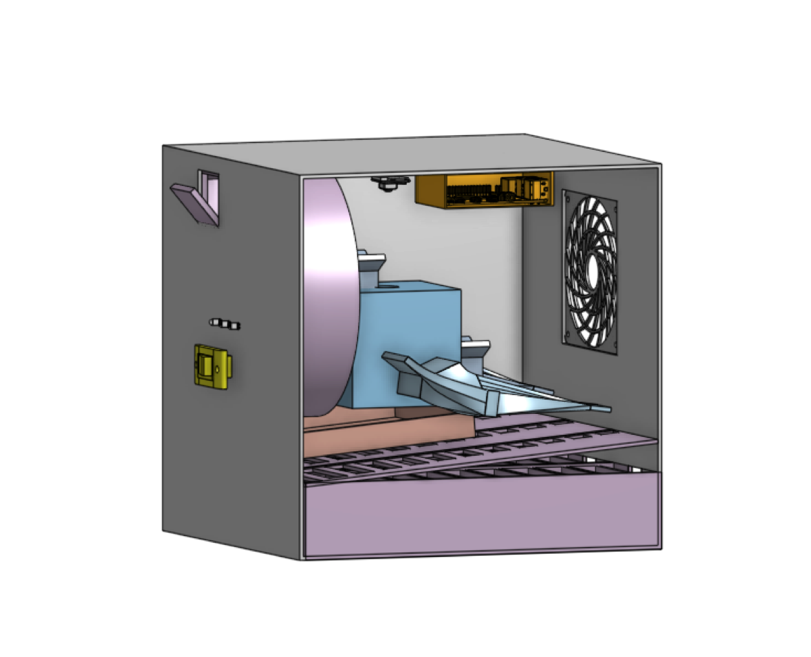
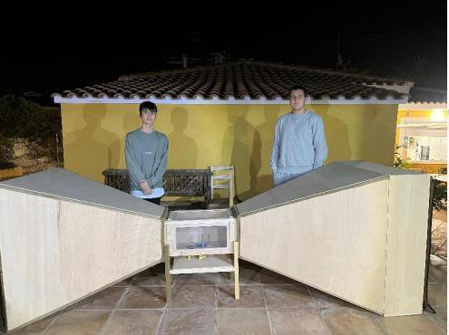
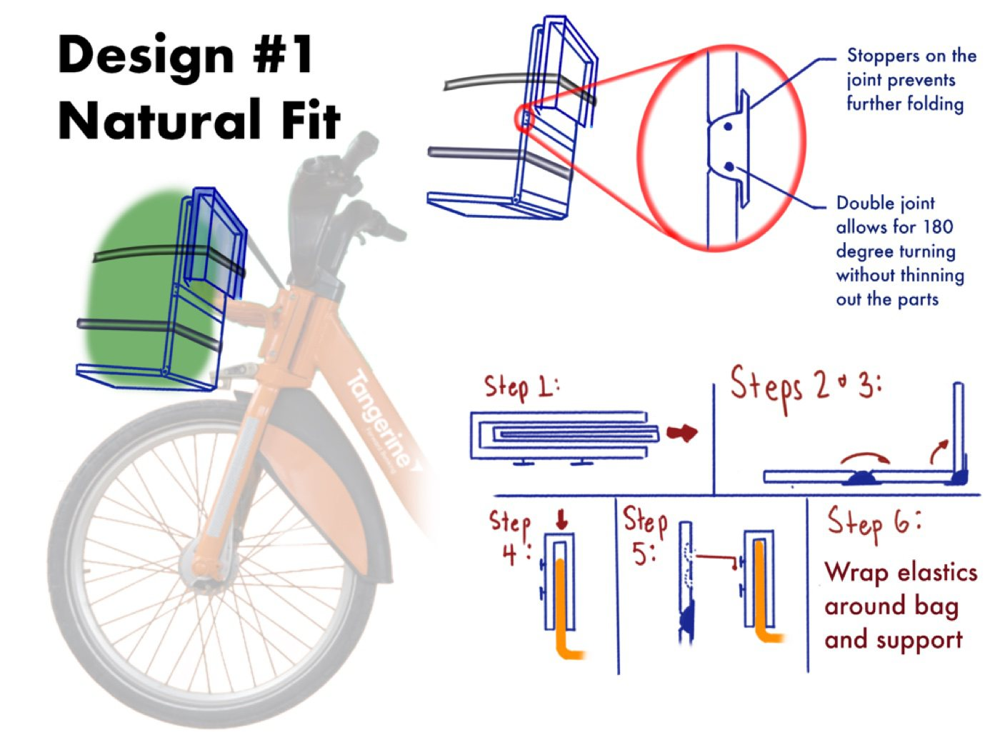

Coursework · Structural design
Bridge design & analysis
Python-aided analysis, fabrication, and load testing of a matboard bridge.
Python · Structural analysis · FabricationI’m Jan Kazimierczak, a second-year Engineering Science student at the University of Toronto. My focus is aerospace engineering, connecting analysis, design, and hands-on testing.
A selection of coursework and personal projects. Explore the design decisions, testing, and results behind each one.

Python-aided analysis, fabrication, and load testing of a matboard bridge.
Python · Structural analysis · Fabrication
A sorting-device concept combining mechanical design and Raspberry Pi vision.
CAD · Machine vision · Prototyping
A custom wind tunnel and 18 grid-fin variants, compared through measured data.
Arduino · Python · R
A folding bicycle-basket concept developed through research and proxy testing.
Stakeholder research · Design · TestingTeam member · Regenerative cooling
I’m a member of UTAT’s Liquid Propulsion team, working on regenerative cooling for UTAT’s liquid engine.
My broader propulsion interests include chamber and nozzle design, injector design, and ignition systems.
My work brings together technical coursework, collaborative projects, and independent experiments.
University of Toronto · Class of 2029 + PEY
Building a foundation across analysis, computation, design, prototyping, testing, and technical communication.
Engineering Science coursework
Working through trade-offs, documenting decisions, and separating requirements, predictions, measurements, and recommendations.
Wind tunnel · grid fins · data analysis
Connecting physical test infrastructure, parameterized fabrication, sensor acquisition, and statistical comparison in one documented study.
Science symposium · stage construction
Science-symposium work and high-school stage construction shaped an emphasis on planning, safety, and raising concerns when a method appears weak.
For project discussions, research, and student opportunities, get in touch.